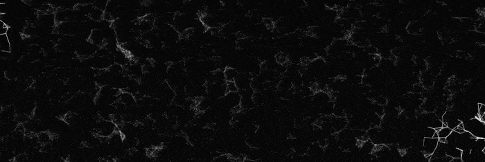

Это мой проект для университета, который визуализирует алгоритм оптимизации маршрутов использующий рой «слепых» частиц.
Частицы взаимодействуют друг с другом для поиска и проложения оптимальных путей между рядом точек, при этом избегая преграды.
Сайт включает в себя мощный
редактор с гибкими настройками,
набор карт и графических шаблонов, а также возможность легко и быстро делиться своими работами.
Полная функциональность доступна на ПК.
Имеется
английская версия.
